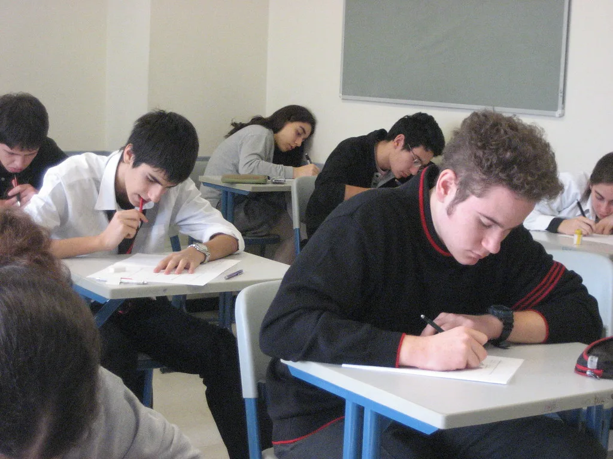

이재명 대통령이 대학수학능력시험(수능) 부정행위 신고 포상금의 기준을 직접 바로잡았다. 이 대통령은 21일 사회관계망서비스(SNS)를 통해 포상금은 '최대 1억원'이 아니라 부정행위 1건당 '최소 1억원'이며, 원칙적으로 부정행위자 수만큼 금액을 더하는 방식이라고 밝혔다. 지난 19일 치러진 2027학년도 수능에서 스마트기기와 인공지능(AI)을 이용한 부정행위 의혹이 잇따르자, 신고를 적극 끌어내 끝까지 추적하겠다는 뜻을 분명히 한 것이다.
이번 발언은 앞서 나온 정부 발표와 결이 다르다. 국무총리실은 지난 18일 신고센터 등에 들어온 제보가 부정행위로 확인되면 최대 1억원의 포상금을 지급하는 방안을 추진한다고 밝혔고, 국민권익위원회도 같은 취지로 설명했다. 대통령이 상한이 아닌 하한으로 기준을 제시하면서 사실상 포상 규모를 대폭 키운 셈이 됐다. 이 대통령은 또 부정행위자가 자수하면서 공범을 신고하면 처벌을 감경하고 포상금도 그대로 지급하겠다는 구상을 내놨다.

대통령의 강경 기조는 수능 직전부터 이어져 왔다. 이 대통령은 지난 17일 시험 시간 중 문제지를 촬영해 AI 서비스에 올린 사례를 모두 전수조사해 엄단하라고 지시했다. 빅테크 기업이 수사에 필요한 자료를 제출하도록 하는 의무를 국가자격시험 영역까지 넓혀 법제화하는 방안도 검토하라고 주문했다. 수능이 끝난 뒤인 20일에는 국가 시험 제도 전반을 처음부터 끝까지 신속하게 손보겠다는 뜻을 밝혔고, 시험 부정을 부패에 버금가는 중대 범죄로 규정하기도 했다.
올해 수능 현장에서는 이전에 없던 대응도 등장했다. 교육부는 시험 당일 오전 위급재난문자를 발송해 제출되지 않은 휴대전화에서 경보음이 울리도록 했고, 이 과정에서 전국 9개 시도에서 스마트폰 22대가 적발됐다는 중간 집계를 내놨다. 이후 소형 카메라와 스마트안경 등을 포함해 부정행위로 적발된 인원이 98명으로 늘었다는 보도도 나왔다. 기기가 작아지고 AI가 문제를 순식간에 풀어내는 환경이 되면서 기존 감독 방식만으로는 한계가 뚜렷하다는 지적이 커지고 있다.
다만 실제 시행까지는 넘어야 할 과제가 남아 있다. 현행 제도는 포상금 상한을 1억원으로 두는 구조여서, 대통령이 언급한 '최소 1억원, 인원별 가산' 방식을 적용하려면 별도의 법적 근거와 세부 지급 기준을 새로 마련해야 한다는 분석이 나온다. 정부 부처 발표와 대통령 발언 사이의 차이를 어떻게 정리할지, 지급 대상과 확인 절차를 어떻게 설계할지도 아직 정해지지 않았다.
고액 포상금을 둘러싼 우려도 함께 제기된다. 포상금이 커질수록 신고가 활발해져 억지 효과를 낼 수 있다는 기대가 있는 반면, 무분별한 제보나 수험생 간 감시 분위기를 부추길 수 있다는 걱정도 있다. 자수자 감경과 포상을 동시에 허용하는 방식이 형평성 논란을 낳을 수 있다는 시각도 있어, 제도 설계 과정에서 세심한 조율이 필요하다는 목소리가 나온다.
수능 성적 발표와 대입 전형이 이어지는 가운데, 부정행위 조사 결과에 따라 해당 수험생의 성적 처리와 후속 조치가 뒤따를 전망이다. 정부가 예고한 시험 제도 개편과 포상금 법제화가 얼마나 빠르고 구체적으로 이뤄질지, 그리고 내년 시험부터 어떤 새 감독 체계가 도입될지에 관심이 쏠린다.